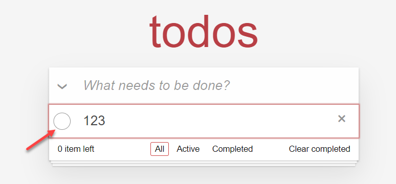
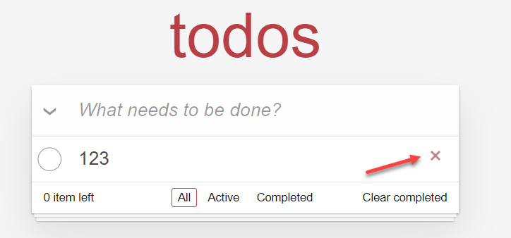
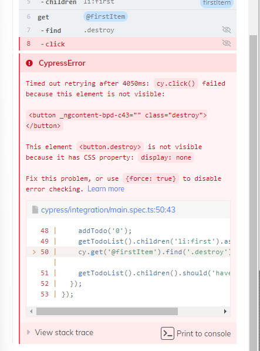

繼續上一篇的內容繼續下去，來完成整個 TodoMVC 跟 E2E 測試
測試案例
編輯 Todo
這個 TodoMVC 的範例中，要顯示 Todo 項目的編輯，只需要在 li 那層加上 editing 的 class 即可，E2E 測試程式如下
1 2 3 4 5 6 7 8 9 10 11 12 13 14 15 16 17 18 19 20 21 22 describe('work with one todo' , () => { beforeEach(() => { for (let i = 0 ; i < 3 ; i++) { addTodo(i.toString()); } }); it('edit first item' , () => { getTodoList().children('li:first' ).as('firstItem' ); cy.get('@firstItem' ).find('label' ).dblclick(); cy.get('@firstItem' ).should('have.class' , 'editing' ); cy.get('@firstItem' ).find('input' ).should('exist' ); }); }); function getTodoList ( return cy.get('.todo-list' ); } function addTodo (content: string ) cy.get('[data-cy=newTodo]' ).type(content).type('{enter}' ); }
延續上一篇的測試，做了一些重構，將一些重複執行的動作包成 function
line 9: 使用 alias 的方式來代替 let/const 的寫法，也是官方建議寫法
1 2 3 4 5 6 7 8 <li *ngFor ="let todo of todos" [ngClass ]="{editing: todo.isEdit}" > <div class ="view" > <input class ="toggle" type ="checkbox" > <label (dblclick )="todo.isEdit = true" > {{ todo.content }}</label > <button class ="destroy" > </button > </div > <input class ="edit" [value ]="todo.content" > </li >
當然 todo 對應的型別也會配合加上 isEdit 的屬性型別
編輯內容後按 Enter 結束編輯模式，顯示內容也應該要對應修改
1 2 3 4 5 6 7 8 9 10 11 it('edit first item value and enter save' , () => { edtingItem(); cy.get('@firstItem' ).find('input.edit' ) .type('hello' ).type('{enter}' ); cy.get('@firstItem' ).should('contain.text' , '0hello' ); }); function edtingItem ( getTodoList().children('li:first' ).as('firstItem' ); cy.get('@firstItem' ).find('label' ).dblclick(); }
app.component.html
1 2 3 4 5 6 7 8 <li *ngFor ="let todo of todos" [ngClass ]="{editing: todo.isEdit}" > <div class ="view" > <input class ="toggle" type ="checkbox" > <label (dblclick )="todo.isEdit = true" > {{ todo.content }}</label > <button class ="destroy" > </button > </div > <input class ="edit" [(ngModel )]="todo.content" (keyup.enter )="todo.isEdit = false" > </li >
使用到 ngModel 所以在 app.module.ts 的地方需要 import FormsModule
完成 Todo

當 checkbox 選取時表示這個 todo 已經完成，會出現刪除線，在 li 上會加上 completed 的 class，E2E 測試如下
1 2 3 4 5 6 it('complete todo item' , () => { addTodo('0' ); getTodoList().children('li:first' ).as('firstItem' ); cy.get('@firstItem' ).find('.toggle' ).check(); cy.get('@firstItem' ).should('have.class' , 'completed' ); });
app.component.html (這邊應該不用解釋了吧)
1 2 3 4 5 6 7 8 <li *ngFor ="let todo of todos" [ngClass ]="{editing: todo.isEdit, 'completed': todo.isCompleted}" > <div class ="view" > <input class ="toggle" type ="checkbox" (change )="todo.isCompleted = !todo.isCompleted" > <label (dblclick )="todo.isEdit = true" > {{ todo.content }}</label > <button class ="destroy" > </button > </div > <input class ="edit" [(ngModel )]="todo.content" (keyup.enter )="todo.isEdit = false" > </li >
刪除 Todo

按下這個就能刪除這筆 todo
1 2 3 4 5 6 it('remove todo item' , () => { addTodo('0' ); getTodoList().children('li:first' ).as('firstItem' ); cy.get('@firstItem' ).find('.destroy' ).click(); getTodoList().children().should('have.length' , 0 ); });
angular 程式的部分
1 <button class ="destroy" (click )="removeTodo(todo)" > </button >
1 2 3 removeTodo (todo: Todo ) this .todos = this .todos.filter((x ) => x.id !== todo.id); }
但這樣子寫看似沒有問題，可是執行起來會出現這個錯誤，

主要是因為刪除的按鈕只有在滑鼠移到上面時才會顯示出來，所以單純這樣子找會發現找不到的問題，但又用到 :hover 的 CSS 屬性來控制 button 的顯示與否，這問題要怎麼處理呢? 有以下幾種方式
使用 .click({force: true}) 的暴力解法
1 2 3 4 5 6 it('remove todo item' , () => { addTodo('0' ); getTodoList().children('li:first' ).as('firstItem' ); cy.get('@firstItem' ).find('.destroy' ).click({ force : true }); getTodoList().children().should('have.length' , 0 ); });
使用 .invoke('show') 的方式強制顯示
1 cy.get('@firstItem' ).find('.destroy' ).invoke('show' ).click();
使用社群開發的 plugin，但這個有瀏覽器環境的限制 (https://github.com/dmtrKovalenko/cypress-real-events )
過濾 Todo
測試過濾功能，這邊就示範一個，使用上篇筆記的技巧，在要點選的目標上標註 data-cy=xxx，至於 todo filter 的實做我這邊就不寫了
1 2 3 4 5 6 7 8 9 10 it('should filter with only completed todo' , () => { addTodo('1' ); addTodo('2' ); addTodo('3' ); getTodoList().children('li:first' ).find('.toggle' ).check(); cy.get('[data-cy=filter-completed]' ).click(); getTodoList().children().should('have.length' , 1 ); });
Todo Items Count
1 2 3 4 5 6 7 8 9 it('should have remain active todo count' , () => { cy.get('[data-cy=todo-count]' ).as('todo-count' ); cy.get('@todo-count' ).should('have.text' , '0 item left' ); addTodo('1' ); addTodo('2' ); cy.get('@todo-count' ).should('have.text' , '2 item left' ); getTodoList().children('li:first' ).find('.toggle' ).check(); cy.get('@todo-count' ).should('have.text' , '1 item left' ); });
理論上這邊應該要拆成更小的測試案例，但就讓我偷懶一下
Clean Complete
1 2 3 4 5 6 7 8 it('should clear completed todo' , () => { addTodo('1' ); addTodo('2' ); getTodoList().children('li:first' ).find('.toggle' ).check(); cy.get('[data-cy=clear-completed]' ).click(); getTodoList().children().should('have.length' , 1 ); });
心得
基本的 E2E 測試寫到後面其實就差不多這樣，當然還有其他更進階的測試手法，就留在後面學習了，而這裡還有一件事情需要處理的是重構測試碼，會看到很多重複的情況，這邊其實能整理的更乾淨
參考資料